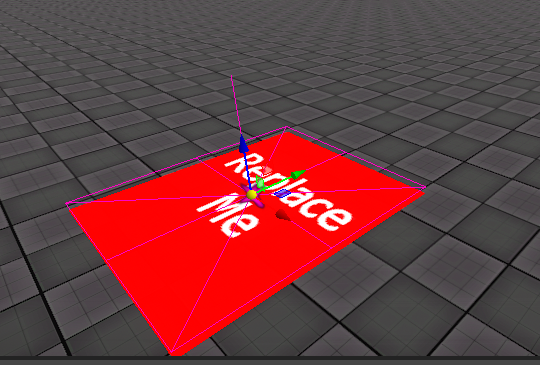
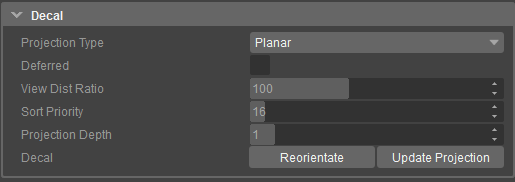

Decal
Placing decals in a level is a simple way to break up uninteresting textures, as well as bring together various level elements like brushes and terrain. A decal material has to be marked with the Decal flag in the Shader Generation Parameters in the material options, as shown below.
All materials located in the Materials/decals folder are correctly set up for use as decals. With the decal selected in the Perspective view, select a material in the Material Editor and click the Assign Material to Selection button.

The Decal consists of the following parameter options in the Properties tab:

Parameter | Description |
|---|---|
Projection Type | Decals have 4 different projection types, numbered 0 to 3. To change a decal's projection, select the decal and change the value in the Projection Type drop-down menu.
|
Deferred | The deferred option is a new projection render type for Decals. When Enabled, it replaces the old Projection Type options "Project on Static Objects" and "Project on Terrain and Static Objects". Deferred rendering is faster than the old rendering system but still slower than "Planar" Projection Type. That means keep as many Decals as possible in the "Planar" mode, especially if you plan a production for console release. |
View Dist Ratio | Used for controlling the maximum viewing distance of the decal. |
Sort Priority | This feature gives the user the control to decide in which order the decals are rendered in the engine. |
Projection Depth | Allows the decal to be projected on every surface around it as long it stays in the specified projection depth. |
Decal | This field has following option:
|